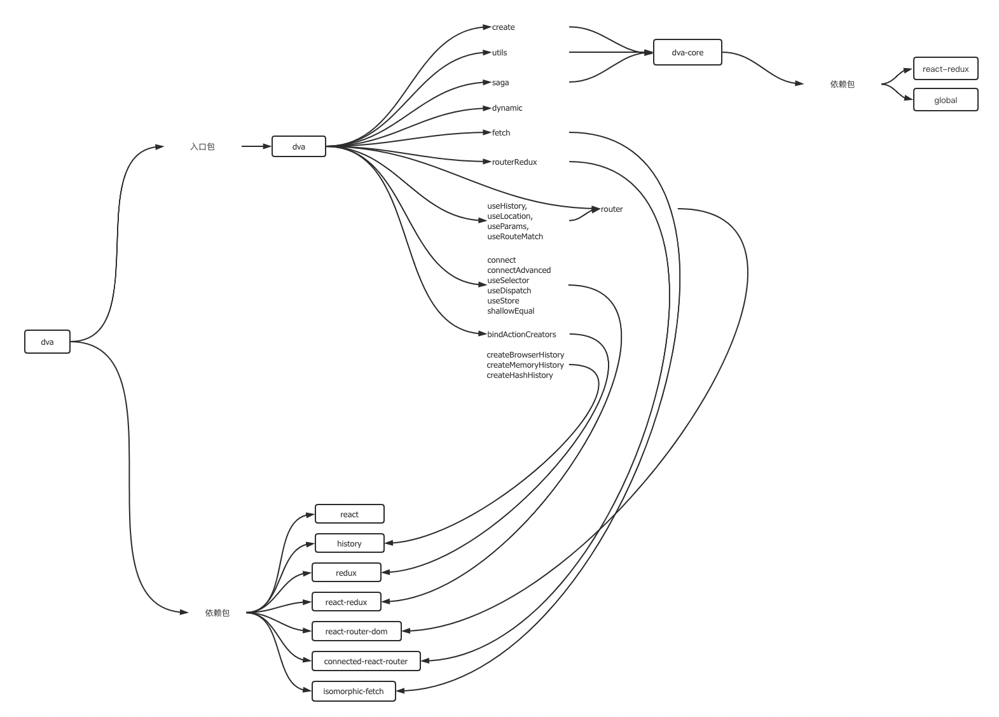
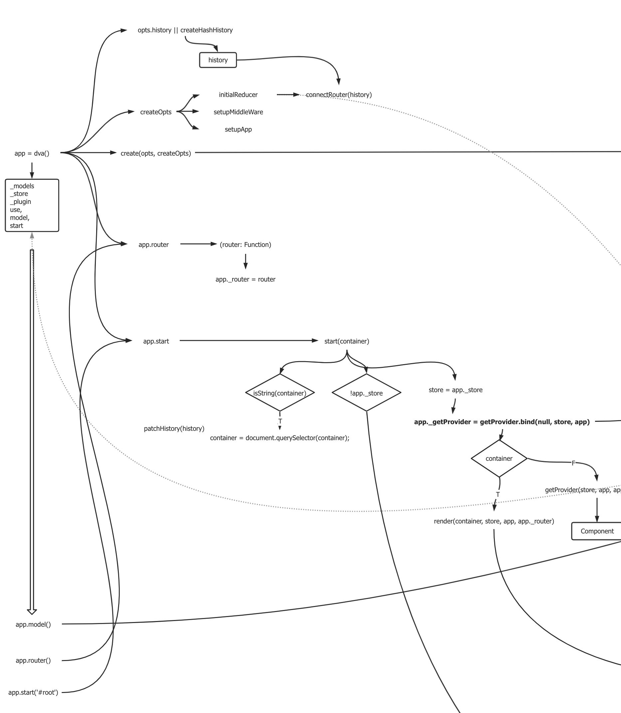

「你平时看源码吗？」
「怎么看源码的？」
我在最近一个多月的面试中，被问到两次这样的问题。
第一，平常用到的库或者工具，为了了解内部的机制，一般都得去看；某些代码库庞大的，需要结合断点去看；
第二，对某种解决方案感兴趣，也会去看这个框架对应模块的源码；
第三，当出现当前库无法解决的问题时，这个时候也需要看源码进行改造的。
如果你回答：“很少看”。那就没得聊了。
当然这个话题没得聊，不一定是面试者的原因，有时候，当你看过源码的开源项目，面试官并没有看过。
我是怎么看源码的？
献出我当初看dvajs源码时的图

我看源码的过程，可以分成两个部分：
- 整理出这个库自己实现的部分和依赖的包部分，有些库可能只是做其依赖包的api整合，自身并没有多少代码量；
- 然后从核心API入口开始，阅读其调用过程，了解其输入和输出，如果想了解整个库的全貌，还会借助draw.io或processOn把执行流程绘制出来，这个工作量跟代码量成正比；

备注
- 这种图根据自己的一套图形语言来绘制，比如什么颜色代表输入，什么图形代表返回值等，所以画出来很可能只有自己能看懂；
- 时间久了通常会忘记细节，回顾的时候想要回忆起细节，可能需要借助流程图再去看代码；
- 可能我的办法比较笨。